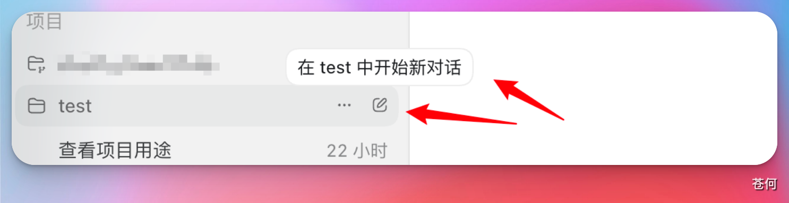
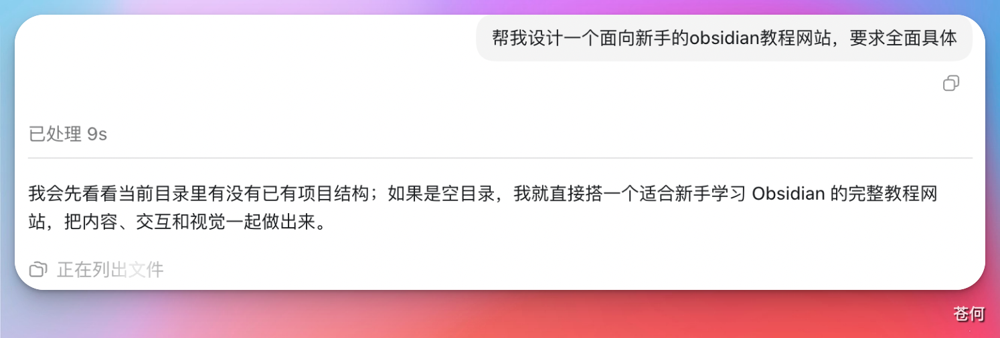
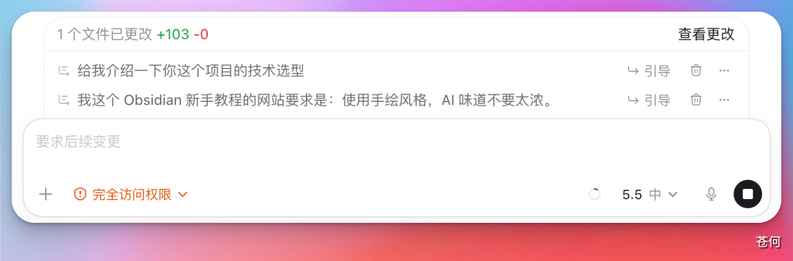
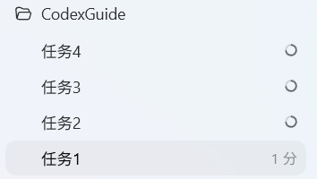

07 日常工作流
任务的顺序执行和并行
本小节来介绍一下，在使用 codex 的过程中，如何进行任务顺序执行的管理以及任务的并行操作。
本站同步：本节已同步为站内教程，可直接阅读；账号、套餐、权限和界面以实际显示为准。
来源：CodexGuide 原文。原页面标注 MIT Licensed；原图与说明按页面内容保留。
任务的顺序执行和并行
本小节来介绍一下，在使用 codex 的过程中，如何进行任务顺序执行的管理以及任务的并行操作。
我们使用codex开发obsidian新手教程网站作为示例：来说明任务的顺序执行管理和并行操作
1.顺序执行
选择本地项目/创建新的项目，该项目实际上就对应我们本地的一个文件夹，它存储在我们的本地。
然后点击创建新的对话。

我们向 CodeX 发送任务，让他帮我们设计一个网站，这个时候他就会开始执行。

在这个任务没有执行的过程中，如果我们去给他下达新的命令，就只能等待。显示的是下面这种情况：

这种相当于当前他正在执行一个任务，我们给他的另外两个命令就需要排队，必须等前面的任务执行完成之后才能执行。
但是如果我们想修改一下要求，比如想让他明确这个网站的背景风格为“手绘风格”，如果等他设计完成之后再去修改就会比较麻烦。我希望他在正在设计的时候就知道我的风格要求。
这时候，我们可以点击引导选项。这样操作后，他就会执行一个“插队”的操作：
- 原本的任务顺序：
(a) 执行网站设计
(b) 介绍技术选型
(c) 执行手绘风格要求（原定第三个任务） - 插队后的效果：
我们想让“手绘风格”在设计过程中就发挥作用，通过点击引导提示，这个任务就会直接插队到当前正在执行的任务当中。
这实际上就是通过这样一个过程，演示如何对顺序执行的任务进行管理以及相关的插队操作。
2.如何并行

实际上就是一个项目（Project）里面，我们同时去执行多个任务。
这个时候，我们只需要在左侧边栏点击“新建对话”就可以了。这样的话，它的几个任务就会并行执行，互不干扰。